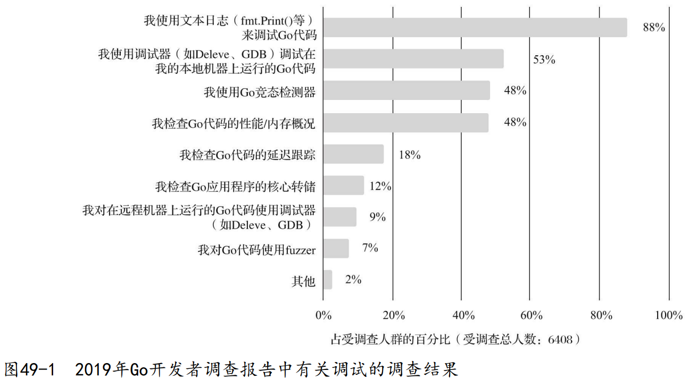

1. Go调试工具的选择
在Go官方的2019年Go开发者报告中，有关Go开发过程依赖的调试工具与技术的调查结果如下图所示：

- print辅助调试 ：更多用于代码可修改的本地环境，通过“在特定位置添加打印值→编译执行→根据输出结果调查思考”的调试循环来逐渐逼近“真相”。
- 专业调试器 ：具有同样的功能，只是调试循环略烦琐，但是它具有如下优点：
- 与IDE集成，通过图形化操作可大幅简化专业调试器的调试循环，提供更佳的体验；
- 事后调查（postmortem）
- 调试core dump文件；
- 在生产环境通过挂接（attach）应用进程，深入应用进程内部进行调试。
在Go发行版中，除了标准的Go编译器之外，还有一个名为 gccgo 的编译器。和标准Go编译器相比，gccgo具有如下特点：
- gccgo是GCC编译器的新前端；
- Go语言由 Go语言规范 定义和驱动演进，gccgo是另一个实现了该语言规范的编译器，但与标准Go编译器实现的侧重点有所不同；
- gccgo编译速度较慢，但具有更为强大的优化能力；
- gccgo复用了GCC后端，因此支持的处理器架构更多；
- gccgo的演进速度与标准Go编译器的速度并不一致，按照 最新官方文档，gcc8等价于go 1.10.1的实现，而gcc9等价于Go 1.12.2的实现。
- 通过gccgo编译而成的Go程序可以得到GCC成熟工具链集合的原生支持，包括使用强大的GDB进行调试。
- 虽然GDB调试器是可以调试通过标准Go编译器编译生成的Go程序的，但GDB对标准Go编译器输出的程序的支持是不完善的。
由于gccgo不是主流，也不是我们重点考虑的内容，因此我们这里考虑的是基于标准Go编译器编译的代码的调试。
Delve 是另一个Go语言调试器， 该调试器工程于2014年由Derek Parker创建。
- Delve旨在为Go提供一个简单、功能齐全、易用使用和调用的调试工具。
- 它紧跟Go语言版本演进，是目前Go调试器的事实标准。
- 和GDB相比，Delve可以更好地理解Go，对并发程序有着很好的支持，支持跨平台。
- 前后端分离的设计使得它可以非常容易地被集成到各种IDE、编译器插件、图形化调试器前端中。
2. Delve调试基础、原理与架构
2.1. 安装Delve
$go get github.com/go-delve/delve/cmd/dlv
$dlv version
Delve Debugger
Version: 1.4.1
Build: $Id: bda606147ff48b58bde39e20b9e11378eaa4db46
安装成功后，可执行文件dlv将出现在$GOPATH/bin下